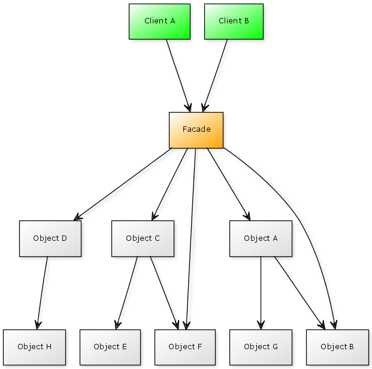
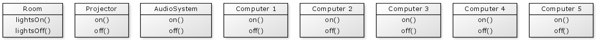
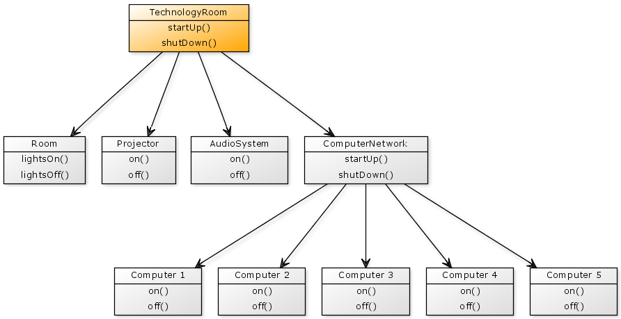
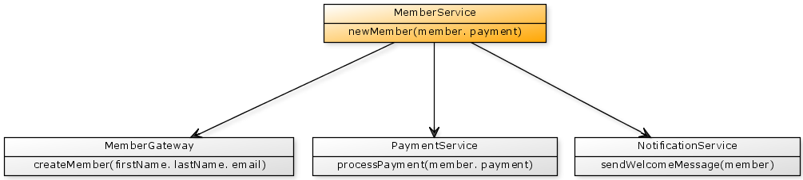
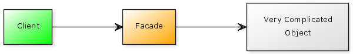
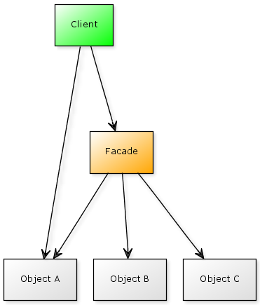
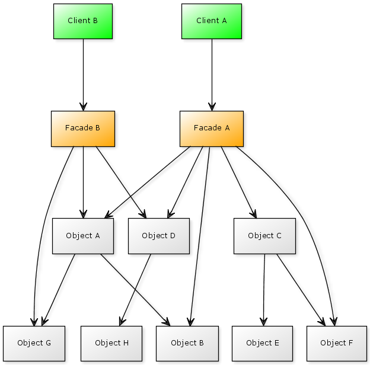
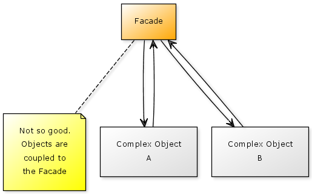
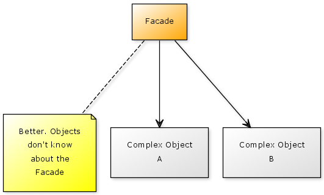

A Facade is an object that provides a simplified view of a more complex underlying system, which effectively makes the underlying system easier to use.
In the following diagram, we have a Facade object which understands the complexities of a number of objects beyond. The Client objects make use of the Facade which makes their code significantly easier to write and understand.

A simple example may be represented by a room specifically designed for teaching technology students. This room may have some audio visual equipment as well as a number of computers for the students to use. When a teacher comes into the room they need to turn on all of the equipment to prepare the room for the lesson. This might involve:
We may need to follow the reverse set of steps when we are finished using the room.
The objects in our technology room may look something like this:

In reality each of these pieces of equipment is generally simple to use, but they each have their own different way of being operated and you need to know the specific details of each.
Ideally it would be nice if we could simply flick a switch and everything in the room comes to life without you needing to manually operate each individual piece of equipment. This would simplify the operation of the room, and would event allow a non technical person to prepare the room (such as one of the students).
Let's create a Facade called a TechnologyRoom which simplifies the start up and shut down of all of the room's equipment.

Our TechnologyRoom startUp() function turns on all of the equipment in the room:
{% highlight cfm %}And the shutDown() function might perform similar steps to turn off all of the rooms equipment:
{% highlight cfm %}So here we have a single object called TechnologyRoom with two functions; startUp() and shutDown(). This object is trivial to use and requires no knowledge of the lighting system, projector, audio system or the computers. Our Technology Room Facade has greatly simplified our usage of the room.
You may notice that we also have a ComputerNetwork object, which is in fact another Facade to the network of computers.
Many applications have a registration process to gain membership. As part of a successful registration process we may need to complete a series of steps such as saving the registration details, processing a payment and sending a welcome email. In a well designed system each of these operations would be in different objects.

In this example, the Member Service is our Facade. Let's take a look at how it may be implemented.
{% highlight cfm %}In this example the MemberService object is initialised with each of objects required to perform it's work. The technique of organising objects in this way is known as dependency injection.
The function to notice here is the newMember() function which is the primary purpose of the Facade. This function is very easy to use and simply takes a member object (containing new member details) and a payment object (containing membership payment details, such as a credit card number and an amount) then performs the steps required to register a new member:
This is only a very simple example of membership account creation. In real world applications this process is likely to be more sophisticated. However, it is likely that you would be able to create a MemberService Facade that is as simple as presented here.
The goal of a Facade is to simply make existing code easier to use, so it may only represent a front for one or two other objects, rather than a large number of objects. For example, suppose you have a very complicated/messy/undocumented or otherwise hard to understand object. You can create a Facade object to simplify the usage of the complex object in some situations.

A Facade is intended to provide a simplified interface to a more complex system, but a Facade is not intended to prevent you from accessing that system if required. So if you need more functionality than the Facade can provide then you can directly use the underlying objects.

For example, our Technology Room Facade above only provides a facility to turn everything on or turn everything off. Once you have turned everything on then you will need access to some of the underlying objects in order to teach the class. For example, you may not need to use the audio system, or you may need to adjust the projector's focus, etc.
If you have a large complex system, you may benefit from creating more than one Facade that accesses the same underlying system. Each Facade would provide a different kind of simplified view of the underlying system.

When you have a Facade it can be a very convenient place to add additional business logic on top of what the underlying more complex system provides. For very simple things this may be fine but if the business logic is more sophisticated then it should be moved into the underlying system instead. Your Facade is intended to simplify the underlying system rather than enhance it. It also means that if you introduce a different Facade in the future for the same subsystem then it would not have access to those new features.
This does not mean, however, that your Facade should just forward requests onto the underlying system. It does know how to coordinate the underlying objects to produce a useful result, but it generally does not add any new features.
A Facade knows the details of how to use the underlying subsystem, but the subsystem should not know about the Facade; the relationship should be a unidirectional one.
For example, the following diagram illustrates a bidirectional relationship between the Facade and its subsystem which should be avoided:

By removing the relationship from the underlying objects to the Facade we have improved our design:

A Session Facade is a name commonly used within the CFML community to represent an object that provides access a user's "session" data. In a trivial implementation, this is simply an object with get() and set() functions that access the session scope.
There are a couple of points to consider when using this kind of object:
Firstly, replacing all occurrences of session.someVariable with sessionFacade.get("someVariable") throughout your application may provide a degree of usefulness, such as allowing you to change how session data is managed, but generally provides little benefit over accessing the session directly. A better approach considers that session data is typically associated with an individual user. Knowing this it is often a better design to create a User object and store that within the session which then provides you with all of the data relevant to the user.
The idea behind a Facade is to:
The Session Facade we have described here is essentially a simple wrapper around the session scope that should be used for all session scope access. We can see that our Session Facade is not strictly a Facade because it does not really simplify session usage and is not designed to be bypassed. It is used to encapsulate the session scope entirely. So what pattern it is? Accessing our session in this way is perhaps closer to a Gateway, which is a pattern that encapsulates access to an external resource and makes it look like a regular object.
Lastly, it is also worth noting that a Session Facade is formal design pattern from the Java J2EE design catalogue. It is a pattern specific to implementing a Java application using "Enterprise Java Beans" and is in no way related to sessions as we use them within CFML. So if you are speaking to a Java developer then the term "Session Facade" will have a very different meaning.
Wikipedia - Facade Pattern
http://en.wikipedia.org/wiki/Facade_pattern
Design Patterns in Ruby - Facade
http://designpatternsinruby.com/section02/facade.html
Programmers Heaven - Facade Pattern
http://www.programmersheaven.com/2/Tutorial-Design-Patterns-Structural-Facade
Geek Daily - C# Design Patterns - The Facade Pattern
http://www.geekdaily.net/2009/03/09/c-design-patterns-the-facade-pattern/